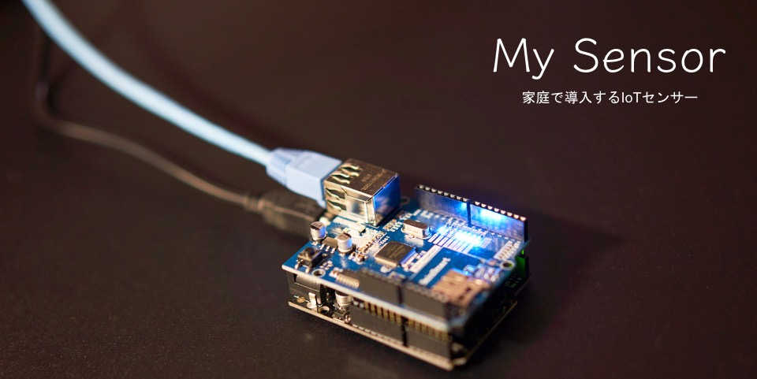

Phylosophy
ICT(Information and Communication Technology)技術の進展によって生活の利便性が向上している。
またIoT(Internet of Things)は様々なモノをインターネットに接続し，
環境情報など様々なデータを取得し，蓄積・解析することで新たな発見を生み出すことによって
より便利で快適な生活を送ることができる。
家電などの家庭用機器にIoTセンサを導入することは実際ハードルが高い。
そこで，簡易な組込みシステムを開発することができるマイコンの「Arduino」を使用して
家庭にIoTセンサを導入しようと考えた。
Requirements
センサを開発に使用したものの一覧。
| 機器 | 名称 | 購入サイト |
| Arduino 本体 （互換品） | サインスマート UNO R3 ATmega328P | アマゾンリンク |
| Arduino Uno Ethernet Shield （互換品） | サインスマート（SainSmart）イーサネット シールド for Arduino UNO MEGA Duemilanove*ニューバージョンW5100* | アマゾンリンク |
| 電流センサ | クランプ式AC電流センサ30A | Switch Scienceリンク |
| Arduinoシールド用ピンソケット | Arduinoシールド用ピンソケットのセット(R3対応) | Switch Scienceリンク |
| Arduino用バニラシールド基板 | Arduino用バニラシールド基板ver.2(青) | Switch Scienceリンク |
| ジャック | パネル基板付けイヤホンジャック【MJ352WO】 | マルツリンク |
| 抵抗モジュール | 小型酸金抵抗(MOS) 3W 10Ω【MOS3C100J】 | マルツリンク |
| 平行コード | ビニル平行コード 黒 2.0sq【VFF黒2.0SQ】 | マルツリンク |
| コードコネクタ | ベター小型コードコネクター(平形コード用)(ホワイト)【WH4515P】 | マルツリンク |
Develop Environment
-
「Arduino IDE」
Version 1.8.3
-
「macOS X」
開発用PC
-
「Ubuntu16.04」
サーバ用OS
Visualization
以下のツールセットを使用した。これらはElastic社によって提供されている。
-
「Logstash」
ログ収集機能を持つ
設定ファイルを記述することで独自の形式のログを解析・パースすることができる
-
「Elasticsearch」
全文検索エンジンを持つデータベース
-
「Kibana」
データベースと連携し，ウェブブラウザ上で可視化する事ができる
Logstash・Elasticsearchとともに使われることが多く，まとめて「Elastic Stack」とされる
Design
全体概要
開発したセンサの導入時の概略イメージを示す。
Develop
工事中
Evalution
作成したセンサの評価をします
◎評価に関して
- 精度
- 安定性
- 保守性
使用したセンサモジュールはアナログ値で電流を出力します。
この電流値は15mA単位で計測され，A/D変換をして得られたデジタルの電流値に対して計算処理をして瞬時消費電力を算出します。
最大30A（30000mA）であるので2000段階（30000mA/15mA）の電力量を表現することができます。
100[V]×15[mA]=1.5[W]，100[V]×30000[mA]=3000[W]
であるので，最小0Wから3000Wまでの消費電力を1.5W刻みで計測できる事になります。
データを送信するArduinoは，Ethernet.hをプログラムに組み込むことでTCPによるデータの送出を行いますが，Arduinoに電源を投入した瞬間（起動時）のTCPセッション生成が不安定である事があります。sleep関数を使用するなどして対処していますが，時々接続ができない現象が発生します。
また，TCPで通信する際に必要なIPアドレスの取得をDHCPで行っていますが，開発環境においては安定せず，数回に一度程度正しく取得できていない現象が発生しています。調査していますが未だ原因は究明できておらず，今後の課題となっています。
今回開発のために使用したArduino UNOではアナログ入力を5ポート持っており，理論上5つのセンサを同時に接続して扱うことができます。
可能であればセンサが故障している際に計測や処理を行わないなどのエラー処理を行う必要があると考えられます。
◎展望/今後するべき改善点
- 新しいセンサの追加を容易にするため，接続部分のモジュール化
- センサ故障やネットワーク接続失敗に於けるエラー処理
ハードウェアの改善
- SSL通信などを使用してグローバルなネットワークを使用した際のセキュリティ確保
- Ethernet仕様時の通信開始安定性の改善
- センサの値異常時やハードウェア故障時のエラー処理及び通知
- データ送信回数を減らす（送信間隔を長くする）ために一度に送信できるデータを増やす
ソフトウェアの改善
- 統計的データの活用
- 可視化データによる現状把握
活用方法
Refference
Logstash
Logstash, https://www.elastic.co/products/logstash, (参照日2018年2月18日)
Logstash Configuration Example, https://www.elastic.co/guide/en/logstash/current/config-examples.html, (参照日2018年2月18日)
ubuntuにLogstashを入れる, https://qiita.com/duke-gonorego/items/be0307601a0dc15685e3, (参照日2018年2月18日)
logstash-plugins/logstash-patterns-core, https://github.com/logstash-plugins/logstash-patterns-core/blob/master/patterns/grok-patterns, (参照日2018年2月18日)
LogstashでのGrokの始め方, https://qiita.com/tuneyukkie/items/75cbb4d44f901fec2188, (参照日2018年2月18日)
LogstashをインストールしてElasticsearchにデータを登録する, http://mamori017.hatenablog.com/entry/2017/04/21/173209, (参照日2018年2月18日)
Elasticsearch
Elasticsearch, https://www.elastic.co/jp/products/elasticsearch, (参照日2018年2月18日)
Install Elasticsearch with Debian Package, https://www.elastic.co/guide/en/elasticsearch/reference/current/deb.html, (参照日2018年2月18日)
Mapping, https://www.elastic.co/guide/en/elasticsearch/reference/current/mapping.html, (参照日2018年2月18日)
Elasticsearchのインストールからデータ投入まで, https://qiita.com/onlyzs/items/045fb33dbd6bd781ce23, (参照日2018年2月18日)
Elasticsearchのお勉強 (Mapping編), https://qiita.com/kompiro/items/5abeae93dc386ab669bf, (参照日2018年2月18日)
【基礎編】Elasticsearchの検索クエリを使いこなそう, https://developers.eure.jp/tech/elasticsearch_search_query/, (参照日2018年2月18日)
ElasticSearch インデックス一覧・マッピング一覧・マッピング設定, http://kenzo0107.hatenablog.com/entry/2015/10/08/113110, (参照日2018年2月18日)
Elasticsearchのクエリとフィルターで簡単な検索を試す例, https://easyramble.com/elasticsearch-queries-and-filters.html, (参照日2018年2月18日)
Kibana
Kibana, https://www.elastic.co/products/kibana, (参照日2018年2月18日)
Arduino
Arduino, https://www.arduino.cc/, (参照日2018年2月18日)
Ethernet / Ethernet 2 library, https://www.arduino.cc/en/Reference/Ethernet, (参照日2018年2月18日)
Profile
Master course student.